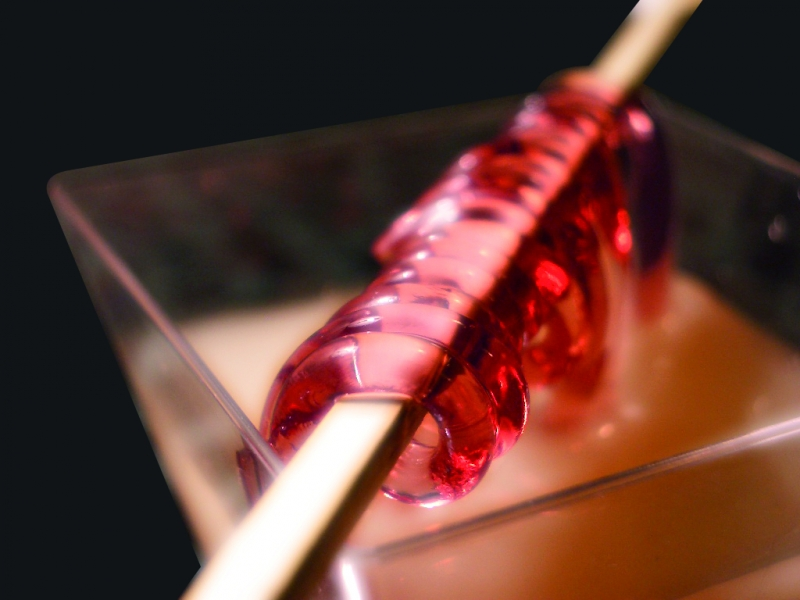

Brochettes de spaghettis cassis. 
 2h
2h- Difficulté :

- Technique(s) : Gélification
Ingrédients
Ck
Carraghénane kappa
- 2g de Carraghénane kappa
- 50mL de sirop de cassis
- 100mL d'eau

Préparation
- Mélanger le sirop avec les 100 mL d'eau. Ajouter le sachet de Kappa Carraghénane. Mélanger au mixer, à ped plongeant de préférence, ou au blender. Chauffer la préparation à 90° pendant 2-3 minutes, puis laisser tiédir.
- Remplir la seringue avec la préparation encore chaude. Fixer un tube en silicone à son extrémité. Injecter ensuite la préparation dans le tube de manière à le remplir entièrement. Renouveler l'opération pour remplir tous les tubes disponibles. Remplir le tube de façon régulière afin d'éviter la formation de bulles d'air qui fragiliseraient le spaghetti.
- Mettre les tubes remplis dans un récipient contenant de l'eau froide et quelques glaçons. Laisser prendre en gelée 5 à 15 min. Plus l'eau sera froide, plus la gélification sera rapide.
- Remplir la seringue avec de l'air. La fixer sur l'extrémité d'un tube rempli de préparation gélifiée. Éjecter l'air pour démouler le spaghetti. Si la pression est trop forte, maintenir l'embout de la seringue avec le doigt. Manipuler délicatement les spaghettis et les conserver au réfrigérateur.
- Les enrouler autour d'une brochette. Disposer la brochette dans une verrine ou une boisson.